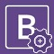

Bootstrap Introduction
If you’re doing anything web related, chances are you’ve heard about Bootstrap. If by now you still don’t know what Bootstrap is, or you just want to find a Bootstrap tutorial for beginners to get a better overview of what it is and what it does best, you’ve come to the right place.
Bootstrap is a powerful toolkit - a collection of HTML, CSS, and JavaScript tools for creating and building web pages and web applications. It is a free and open source project, hosted on GitHub, and originally created by (and for) Twitter.
So, why learn Boostrap?
Web designers and web developers like Bootstrap because it is flexible and easy to work with. Its main advantages are that it is responsive by design, it maintains wide browser compatibility, it offers consistent design by using re-usable components, and it is very easy to use and quick to learn. It offers rich extensibility using JavaScript, coming with built-in support for jQuery plugins and a programmatic JavaScript API. Bootstrap can be used with any IDE or editor, and any server side technology and language, from ASP.NET to PHP to Ruby on Rails.
With Bootstrap, web developers can concentrate on the development work, without worrying about design, and get a good looking website up and running quickly. Conversely, it gives web designers a solid foundation for creating interesting Bootstrap themes.
To get start and know more about Bootstrap Basics click here